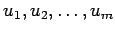
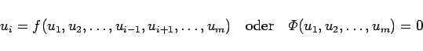
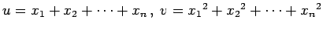

Inhalt Index DeskTop Bronstein

 Funktionen und ihre Darstellung Funktionen von mehreren Veränderlichen Verschiedene ebene Definitionsbereiche Abhängigkeit von Funktionen
Funktionen und ihre Darstellung Funktionen von mehreren Veränderlichen Verschiedene ebene Definitionsbereiche Abhängigkeit von Funktionen


In Analogie zum Fall zweier Funktionen gilt, daß m Funktionen  von n Veränderlichen  in einem gemeinsamen Definitionsbereich abhängig sind, wenn irgendeine von ihnen als Funktion der übrigen ausdrückbar ist, d.h., wenn es für jeden Punkt des Gebietes eine Identität der Art
in einem gemeinsamen Definitionsbereich abhängig sind, wenn irgendeine von ihnen als Funktion der übrigen ausdrückbar ist, d.h., wenn es für jeden Punkt des Gebietes eine Identität der Art
|  | (2.274) |
gibt. Wenn keine solche Funktion existiert, dann spricht man von unabhängigen Funktionen.
| Beispiel |
|
Die Funktionen  und |